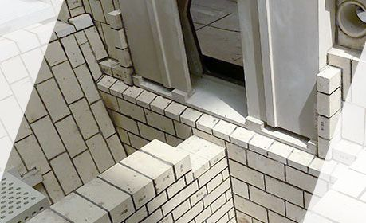
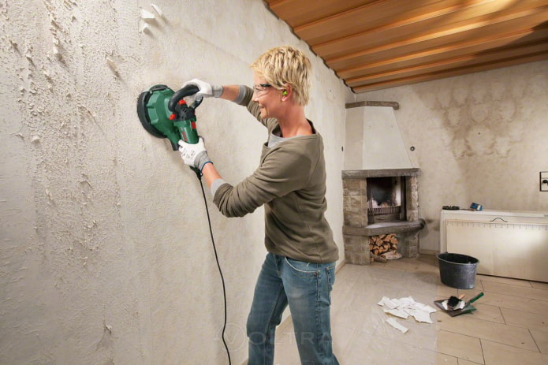

Welcome to my site!
I am a bricklayer within 20+ years of experience. I have worked on many different types of projects, from small residential jobs to large commercial projects. I am a hard worker and take pride in my work. In my time working as a bricklayer at Intro Developments Ltd, I have had the opportunity to work in St. Bartholomew’s Hospital (Rochester), which I found really interesting project, most memorable was when I found out that the building has more then 1000 years. I was really grate to be able to restore an old building like this. I am a professional bricklayer with many years of experience. I have a keen eye for detail and take great pride in my work. I am always punctual and reliable, and always put the needs of my clients first. I am very knowledgeable about all aspects of bricklaying, natural stone and fireplaces.
It's important to consider:
-

WHY A BRICKLAYER ?
A bricklayer is a profession that requires the master to have extraordinary knowledge in this field, because he must not only be able to use the necessary tools, but also thoroughly know all the properties of the material used in the work and have an idea of the binder mortar, which is the main component of masonry.
-
SKILL AND EXPERIENCE
The strength of all composite structures depends on the skill and experience of the mason, so the specialist must have high qualifications and practical experience, comply with technological requirements and take into account the specifics of building mixtures and materials. Our masons are experienced and competent!
-

QUALIFICATION
Masons who do not have the correct qualifications, the necessary work experience or the availability of special equipment can only ruin the materials you purchased, while a house built by a non-professional craftsman will remain damp and uncomfortable. Which could lead to the dismantling of the entire building.
-
PRICE QUALITY
So when it comes specifically to the professionalism of builders, you should not save, because it is known that the stingy pays twice. Demolition of the building and assembly will cost you many times more than the cost of the services of a professional mason. Therefore, if you want to get good service, call right now!
A Bricklayer's work include the following:
-
Reading and interpreting sketches and blueprints
Reading and interpreting sketches and blueprints
-
Cutting and trimming bricks
Cutting and trimming bricks using hand and power tools
-

Works with acid-resistant bricks
Lining or relining furnaces and boilers using acid-resistant bricks
-

Restoring, cleaning or painting
Restoring, cleaning or painting existing brick structures
Build line chimneys and smokestacks
Laying firebricks to line industrial chimneys and smokestacks
Build chimneys, fireplaces
Laying bricks, stone or similar materials to build residential/commercial chimneys and fireplaces
Build stair steps for house or patio
Laying bricks, stone stair steps for house or patio
Build patio
Laying bricks, stone or similar materials to build patios
Build walls or walkways
Laying bricks, stone or similar materials to build walls or walkways
my fotos